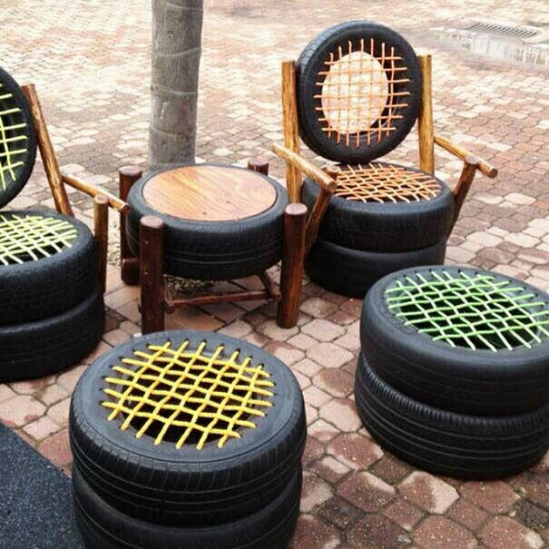
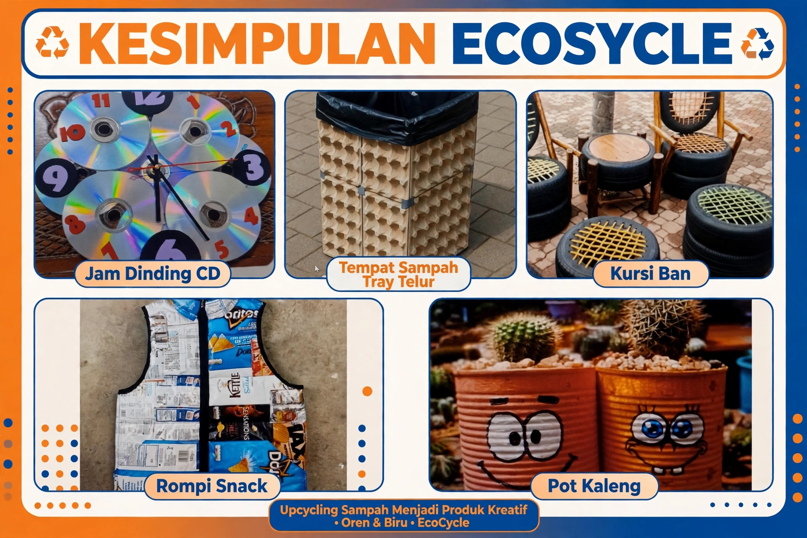

Produk Kami
Ide sederhana, dampak nyata. Kenali karya yang lahir dari proses belajar dan kepedulian terhadap lingkungan.
 Cerita Proyek
Cerita Proyek
DVD Bekas Menjadi Karya Berkelas
Kreasi unik jam dinding dari DVD bekas, bergaya dan ramah lingkungan.
Penjelasan Recycle
Recycle
Tempat Sampah dari Limbah Tempat Telur
Kreasi tempat sampah unik menggunakan limbah tempat telur bekas.
Penjelasan
TekstilFurnitur Ramah Lingkungan
Karya kreatif dengan memanfaatkan bahan bekas menjadi barang berguna.
Penjelasan.jpeg) Plastik Guna Ulang
Plastik Guna Ulang
Pot Tanaman Hias dari Kaleng Bekas
Kreasi pot tanaman hias dari kaleng bekas dengan tampilan menarik.
Penjelasan.jpeg) Recycle
Recycle
Kreasi Busana dari Bungkus Makanan
Mengubah bungkus makanan bekas menjadi karya busana kreatif.
Penjelasan
RangkumanKesimpulan Pemilihan Produk Kolaboratif
Rangkuman produk yang dipilih dan alasan di balik keputusan tim.
Penjelasan